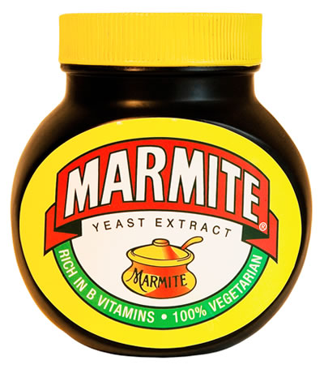

bonne maman apricot jam

big memories of eating this on crossaints at my grandmother's house (she loves a pastry). great with salty butter.
Kaya coconut jam

a recent addition to the cupboard but really pleased about it. a malaysian toast product somewhere between a butter a caramel and a custard, but it's called a jam. It can be bought here
marmite

a salty spread from my native land. a little goes a very long way! if you're curious it turns out that wegmans in the navy yard have a 'british' section in their international foods aisle where this may be obtained for many $